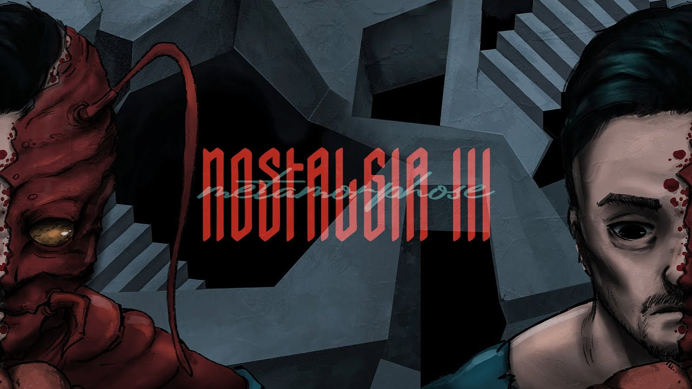

Biography
METAMORPHOSE EP
Introducing the EP
When materialistic values take over society, people often lose their true worth, reduced to mere possessions. This is especially noticeable in today's world of machinery and the relentless grind of corporate life. In Franz Kafka's captivating novel, "The Metamorphosis," the protagonist wakes up one morning to find himself transformed into a feeble and unwanted insect. Through this story, Kafka depicts the struggles of an individual driven by ambition and dreams, who sacrifices and endures countless hardships for years, all for the sake of others, particularly their family, whom they support as the breadwinner. However, they soon discover that their relationship with their loved ones was solely based on materialistic gains and unconscious hypocrisy. How can one bear the disdainful glances and repulsion from those closest to them? How does one find an escape from such a predicament? Living in constant inner turmoil, consumed by fear and hiding, the protagonist faces an internal battle. This poignant narrative serves as a powerful reminder that at any given moment, we could find ourselves transformed into unwanted creatures when our usefulness to others fades away or when setbacks prevent us from fulfilling their interests. The author, Kafka, aims to convey this unsettling truth, urging us to reflect on our own lives and relationships.
First track: DROP
Second track: RED PILL
Third track: CAGE
Fourth track: NOSTALGIA III
Fifth track: TIKI TAKA